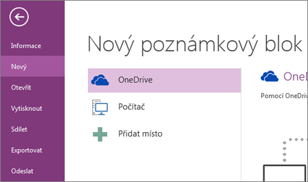

Jako další se objevuje OneNote
Co je to OneNote?
OneNote je nadupaný program, který nám slouží k vytváření našich suprových poznámek
Jak s ním pracovat?

Vytvoření poznámkového bloku
-
Klikněte na Soubor > Nový
-
Vyberte některé z dostupných umístění (třeba OneDrive) nebo klikněte na Přidat místo a zadejte, kam má OneNote nový poznámkový blok uložit
|
Psaní poznámek rukou nebo pomocí klávesnice
-
Pokud chcete psát na stránku v OneNotu poznámky, klikněte na stránce na místo, kam chcete poznámky umístit, a začněte psát.
-
Kdykoli budete chtít začít psát poznámku kdekoli jinde na stránce, stačí tam kliknout a začít psát.
- Pokud počítač podporuje rukopis, klikněte na pásu karet na Kreslení, vyberte pero a můžete kreslit nebo psát přímo na obrazovce.
|